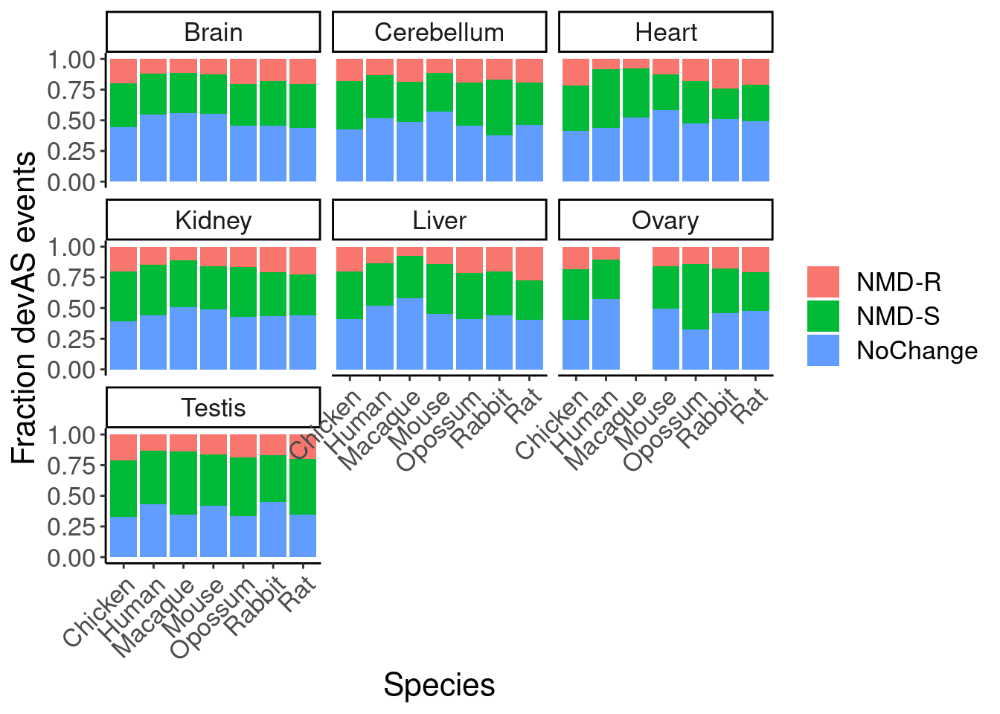

Last updated: 2024-07-11
Checks: 6 1
Knit directory:
2024_comparativesplicing/analysis/
This reproducible R Markdown analysis was created with workflowr (version 1.7.0). The Checks tab describes the reproducibility checks that were applied when the results were created. The Past versions tab lists the development history.
The R Markdown is untracked by Git. To know which version of the R
Markdown file created these results, you’ll want to first commit it to
the Git repo. If you’re still working on the analysis, you can ignore
this warning. When you’re finished, you can run
wflow_publish to commit the R Markdown file and build the
HTML.
Great job! The global environment was empty. Objects defined in the global environment can affect the analysis in your R Markdown file in unknown ways. For reproduciblity it’s best to always run the code in an empty environment.
The command set.seed(19900924) was run prior to running
the code in the R Markdown file. Setting a seed ensures that any results
that rely on randomness, e.g. subsampling or permutations, are
reproducible.
Great job! Recording the operating system, R version, and package versions is critical for reproducibility.
Nice! There were no cached chunks for this analysis, so you can be confident that you successfully produced the results during this run.
Great job! Using relative paths to the files within your workflowr project makes it easier to run your code on other machines.
Great! You are using Git for version control. Tracking code development and connecting the code version to the results is critical for reproducibility.
The results in this page were generated with repository version 5495e15. See the Past versions tab to see a history of the changes made to the R Markdown and HTML files.
Note that you need to be careful to ensure that all relevant files for
the analysis have been committed to Git prior to generating the results
(you can use wflow_publish or
wflow_git_commit). workflowr only checks the R Markdown
file, but you know if there are other scripts or data files that it
depends on. Below is the status of the Git repository when the results
were generated:
Ignored files:
Ignored: .Rhistory
Ignored: .Rproj.user/
Ignored: code/.snakemake/
Ignored: code/GenomeFiles/
Ignored: code/SJC_annotations_d5d1043c36aa60f014dee37e6f54418aeac524c63858131c0c68769dba597410.pckle
Ignored: code/Session.vim
Ignored: code/kaessmanAnalysis/
Ignored: code/kaessman_AS_dat/
Ignored: code/logs/
Ignored: code/rules/.GenomeAnnotations.smk.swp
Ignored: code/scratch/
Untracked files:
Untracked: analysis/2024-07-08_CheckLeafcutter2_Classifications.Rmd
Untracked: analysis/2024-07-09_Mazin_CheckNMD_Effects.Rmd
Untracked: code/scripts/LeafcutterJuncClassificationsToAS_segments.R
Unstaged changes:
Modified: analysis/2024-06-24_CheckAnnotationsOfOtherSpecies.Rmd
Modified: code/Snakefile
Modified: code/envs/bedparse.yml
Modified: code/rules/GenomeAnnotations.smk
Modified: code/scripts/AS_ExonSegments_to_AS_Junctions.py
Modified: code/scripts/leafcutter2
Note that any generated files, e.g. HTML, png, CSS, etc., are not included in this status report because it is ok for generated content to have uncommitted changes.
There are no past versions. Publish this analysis with
wflow_publish() to start tracking its development.
I previously explored Mazin splicing quantifications. They communicate splicing in an exon-centric method, defining AS_segments that can either be included or excluded in the transcript, and use some PSI metric for each segment in each sample. I will use their quantifications. For each AS_segment, I have additionally identified the unique junctions associated with inclusion or exlcusion of that segment (using annotated protein_coding transcript scrutctures as reference to determine splice junctions), then ran those junctions through leafcutter2 SpliceJunctionClassifier.py script to determine whether each segment corresponds to a coding (productive) or unproductive transcript. Now I will check whether changes in PSI of these segments correlate with changes in expression in the expected manner.
As a starting point, I previously tidied their data into a long table of orthologous AS_segments with PSI values for each sample… But I still need to do a bit of data tidying to combinate the splicing quantifications with their unproductive/productive classifications and the host gene RPKM
library(tidyverse)
library(data.table)
library(biomaRt)
# Set theme
theme_set(
theme_classic() +
theme(text=element_text(size=16, family="Helvetica")))
# I use layer a lot, to rotate long x-axis labels
Rotate_x_labels <- theme(axis.text.x = element_text(angle = 45, vjust = 1, hjust=1))
PSI <- read_tsv("../code/kaessman_AS_dat/All.ortho.exons.PSI.tsv.gz")
RPKM <- Sys.glob("../code/kaessman_AS_dat/FromWebApp/*/RPKM.gz") %>%
setNames(str_replace(., "../code/kaessman_AS_dat/FromWebApp/(.+?)/RPKM.gz", "\\1")) %>%
lapply(fread, sep=' ')
dim(PSI)[1] 1532 1891Do the column (sample) names all match between these two tables?
RPKM.sampleList <- lapply(RPKM, colnames) %>%
lapply(data.frame) %>%
bind_rows(.id="Species") %>%
dplyr::rename("sample"=2) %>%
filter(!sample=="Names") %>%
mutate(Species = str_to_title(Species)) %>%
mutate(sample = paste(Species, sample, sep = "."))
head(RPKM.sampleList) Species sample
1 Chicken Chicken.Brain.e10.1
2 Chicken Chicken.Brain.e10.2
3 Chicken Chicken.Brain.e10.3
4 Chicken Chicken.Brain.e10.4
5 Chicken Chicken.Brain.e12.1
6 Chicken Chicken.Brain.e12.2dim(RPKM.sampleList)[1] 1890 2inner_join(RPKM.sampleList,
data.frame(sample = colnames(PSI)[-1])) %>%
dim()[1] 1890 2Ok. success. we can join RPKM and PSI by sample name. The next thing to do is ordinally stage by sample name… I did this in a previous notebook, and will repeat code here, with minor modifications…
ManualOrdinalStages <- RPKM.sampleList %>%
separate(sample, into=c("Species", "Tissue", "StageName", "StageOrdinal"), convert=T, remove=F) %>%
distinct(Species, StageName) %>%
mutate(Species.StageName = paste(Species, StageName)) %>%
mutate(E_or_P = case_when(
str_detect(StageName, '^e') ~ 'E',
str_detect(StageName, '^P') ~ 'P',
str_detect(StageName, 'wpc$') ~ 'E',
TRUE ~ 'P'
)) %>%
mutate(StageExtractedNumber = str_replace(StageName, "^[^0-9]*?([0-9]*+)[^0-9]*$", "\\1")) %>%
mutate(StageExtractedNumber = case_when(
StageName == "newborn" ~ 0,
StageName == "infant" ~ 365,
StageName == "toddler" ~ 700,
StageName == "school" ~ 3650,
StageName == "youngTeenager" ~ 5000,
StageName == "teenager" ~ 5500,
StageName == "oldTeenager" ~ 6000,
StageName == "youngAdult" ~ 10000,
StageName == "youngMidAge" ~ 12500,
StageName == "olderMidAge" ~ 17000,
StageName %in% c("Senior", "senior") ~ 20000,
TRUE ~ as.numeric(StageExtractedNumber)
)) %>%
arrange(Species, E_or_P, StageExtractedNumber) %>%
group_by(Species) %>%
mutate(OrdinalStage.Manual = row_number()) %>%
ungroup() %>%
dplyr::select(Species, StageName, OrdinalStage.Manual) %>%
# Roughly Calibrated Stages from Cardosa-Moreira et al, Fig2A
mutate(RoughlyCalibratedStage = case_when(
StageName == "P0" ~ "Birth",
Species == "Opossum" & StageName == "14" ~ "Birth",
#Day13 Opossum is arguably roughly equivalent to newborn human
StageName == "newborn" ~ "Birth",
Species == "Chicken" & StageName == "e14" ~ "Onset meiosis oogenesis",
Species == "Opossum" & StageName == "28" ~ "Onset meiosis oogenesis",
Species == "Human" & StageName == "10wpc" ~ "Onset meiosis oogenesis",
Species == "Rabbit" & StageName == "e27" ~ "Onset meiosis oogenesis",
Species == "Rat" & StageName == "e16" ~ "Onset meiosis oogenesis",
Species == "Mouse" & StageName == "e11" ~ "Onset meiosis oogenesis",
Species == "Chicken" & StageName == "P70" ~ "Onset meiosis spermatogenesis",
Species == "Opossum" & StageName == "74" ~ "Onset meiosis spermatogenesis",
Species == "Macaque" & StageName == "P1095" ~ "Onset meiosis spermatogenesis",
Species == "Human" & StageName == "youngTeenager" ~ "Onset meiosis spermatogenesis",
Species == "Rabbit" & StageName == "P84" ~ "Onset meiosis spermatogenesis",
Species == "Rat" & StageName == "P14" ~ "Onset meiosis spermatogenesis",
Species == "Mouse" & StageName == "P14" ~ "Onset meiosis spermatogenesis",
TRUE ~ NA_character_
))
ManualOrdinalStages %>%
mutate(Species = factor(Species, levels=c("Human", "Macaque", "Mouse", "Rat", "Rabbit", "Opossum", "Chicken"))) %>%
ggplot(aes(y=OrdinalStage.Manual, x="")) +
geom_text(aes(label=StageName, color=RoughlyCalibratedStage), size=2) +
scale_y_reverse() +
facet_wrap(~Species, nrow = 1) +
labs(x=NULL)For easier joining, let’s first pivot_longer the RPKM tables
RPKM$chicken %>%
pivot_longer(names_to = "sample", values_to = "RPKM", -Names) %>%
dim()[1] 3614795 3I’m now realizing these tables might be too big… I might end up with a table of >30 million rows… Maybe I should first just filter for the relevant genes for the orthologous exons
OrthologousSegmentList <- read_csv("../code/kaessman_AS_dat/Supplementary_Data/Supplementary_Data_8.csv")
OrthologousSegmentList.long <- OrthologousSegmentList %>%
mutate(human.seg.id = human) %>%
filter(human %in% PSI$human.seg.id) %>%
pivot_longer(names_to = "Species", values_to = "segid", -human.seg.id) %>%
separate(segid, into=c("AS_segment", "chrom", "strand", "start", "stop"), sep=":", convert=T)
AS_segment_classifications <- Sys.glob("../code/kaessmanAnalysis/leaf2_to_AS_segments/*.collapsed.tsv.gz") %>%
setNames(str_replace(., "../code/kaessmanAnalysis/leaf2_to_AS_segments/(.+?).collapsed.tsv.gz", "\\1")) %>%
lapply(fread) %>%
bind_rows(.id="Species") %>% pivot_wider(names_from = "isoform", values_from = c("PercentCoding", "n"), names_sep=".") %>%
mutate(ChangeInCoding_InclusionToExclusion = PercentCoding.AS_seg_included - PercentCoding.AS_seg_excluded)
OrthologousSegmentsAndEffects <- AS_segment_classifications %>%
dplyr::select(-Species) %>%
inner_join(OrthologousSegmentList.long)Before we try to match expression to splicing effects, I’m curious how conserved these predicted NMD effects are for othoologous segments…
OrthologousSegmentsAndEffects %>%
filter(Species %in% c("human", "chicken")) %>%
dplyr::select(Species, ChangeInCoding_InclusionToExclusion, human.seg.id) %>%
add_count(Species, human.seg.id) %>%
add_count(human.seg.id) %>%
filter(n==1 & nn==2) %>%
pivot_wider(names_from = "Species", values_from = "ChangeInCoding_InclusionToExclusion") %>%
ggplot(aes(x=chicken, y=human)) +
scale_x_continuous(breaks=-1:1, labels=c("UnproductiveToProductive", "NoChange", "ProductiveToUnproductive")) +
scale_y_continuous(breaks=-1:1, labels=c("UnproductiveToProductive", "NoChange", "ProductiveToUnproductive")) +
geom_jitter(alpha=0.1) +
labs(x="Chicken, effect of inclusion", y="Human, effect of inclusion")OrthologousSegmentsAndEffects %>%
count(Species)# A tibble: 7 × 2
Species n
<chr> <int>
1 chicken 1152
2 human 979
3 macaque 1048
4 mouse 1062
5 opossum 1178
6 rabbit 1141
7 rat 1136I’ll think of a different way to analyze this later…
Let’s first subset devAS segments, and look at the corresponding changes in splicing and expression… Let’s do this just for chicken first
devAS.chicken <- read_csv("../code/kaessman_AS_dat/FromWebApp/chicken/devAS.gz", n_max=Inf) %>%
rename("segment.name"="...1") %>%
pivot_longer(cols=-c(1:8), names_to = c(".value", "tissue"), values_to = c("value"), names_pattern=c("(^.+)\\.(.+$)")) %>%
filter(pattern %in% c("d", "u")) %>%
inner_join(AS_segment_classifications, by=c("seg.id"="AS_segment")) %>%
mutate(tissue = str_to_title(tissue))
PSI.chicken <- read_csv("../code/kaessman_AS_dat/FromWebApp/chicken/PSI.gz") %>%
dplyr::rename("seg.id"=1) %>%
filter(seg.id %in% devAS.chicken$seg.id) %>%
pivot_longer(names_to = "sample",values_to = "PSI",-seg.id)
RPKM.chicken <- read_delim("../code/kaessman_AS_dat/FromWebApp/chicken/RPKM.gz", delim=' ') %>%
dplyr::rename("Gene_name"="Names") %>%
filter(Gene_name %in% devAS.chicken$Gene_name) %>%
pivot_longer(names_to = "sample",values_to = "RPKM",-Gene_name) %>%
mutate(sample = paste("Chicken", sample, sep="."))
Joined.PSI.RPKM.chicken <- devAS.chicken %>%
inner_join(PSI.chicken) %>%
inner_join(RPKM.chicken) %>%
separate(sample, into=c("Species", "Tissue", "StageName", "StageOrdinal"), convert=T, remove=F) %>%
filter(Tissue == tissue) %>%
inner_join(ManualOrdinalStages)
P <- Joined.PSI.RPKM.chicken %>%
group_by(segment.name, tissue) %>%
summarise(cor.PSI = cor(PSI, OrdinalStage.Manual, method = "sp"),
cor.RPKM = cor(RPKM, OrdinalStage.Manual, method='sp')) %>%
ungroup() %>%
inner_join(
Joined.PSI.RPKM.chicken %>%
distinct(segment.name, tissue, .keep_all=T)
) %>%
mutate(ChangeInCoding_ExclusionToInclusion.Rounded = round(ChangeInCoding_InclusionToExclusion*-1)) %>%
filter(!is.na(ChangeInCoding_ExclusionToInclusion.Rounded)) %>%
mutate(ChangeInCoding_ExclusionToInclusion.Rounded = recode(ChangeInCoding_ExclusionToInclusion.Rounded, `1`="NMD-S", `0`="NoChange", `-1`="NMD-R")) %>%
ggplot(aes(x=cor.PSI, y=cor.RPKM, color=tissue)) +
geom_point(alpha=0.1) +
facet_grid(~ChangeInCoding_ExclusionToInclusion.Rounded)
PP +
geom_smooth(method='lm')Ok, the slight enrichment in the upper left and lower right in the NMD-S facet makes sense. I’m sure we can improve on this quite a bit. For now I want to compare these results to human, where annotations are much better…
devAS.human <- read_csv("../code/kaessman_AS_dat/FromWebApp/human/devAS.gz", n_max=Inf) %>%
rename("segment.name"="...1") %>%
pivot_longer(cols=-c(1:8), names_to = c(".value", "tissue"), values_to = c("value"), names_pattern=c("(^.+)\\.(.+$)")) %>%
filter(pattern %in% c("d", "u")) %>%
inner_join(AS_segment_classifications, by=c("seg.id"="AS_segment")) %>%
mutate(tissue = str_to_title(tissue))
PSI.human <- read_csv("../code/kaessman_AS_dat/FromWebApp/human/PSI.gz") %>%
dplyr::rename("seg.id"=1) %>%
filter(seg.id %in% devAS.human$seg.id) %>%
pivot_longer(names_to = "sample",values_to = "PSI",-seg.id)
RPKM.human <- read_delim("../code/kaessman_AS_dat/FromWebApp/human/RPKM.gz", delim=' ') %>%
dplyr::rename("Gene_name"="Names") %>%
filter(Gene_name %in% devAS.human$Gene_name) %>%
pivot_longer(names_to = "sample",values_to = "RPKM",-Gene_name) %>%
mutate(sample = paste("Human", sample, sep="."))
Joined.PSI.RPKM.human <- devAS.human %>%
inner_join(PSI.human) %>%
inner_join(RPKM.human) %>%
separate(sample, into=c("Species", "Tissue", "StageName", "StageOrdinal"), convert=T, remove=F) %>%
filter(Tissue == tissue) %>%
inner_join(ManualOrdinalStages)
P.human <- Joined.PSI.RPKM.human %>%
group_by(segment.name, tissue) %>%
summarise(cor.PSI = cor(PSI, OrdinalStage.Manual, method = "sp"),
cor.RPKM = cor(RPKM, OrdinalStage.Manual, method='sp')) %>%
ungroup() %>%
inner_join(
Joined.PSI.RPKM.human %>%
distinct(segment.name, tissue, .keep_all=T)
) %>%
mutate(ChangeInCoding_ExclusionToInclusion.Rounded = round(ChangeInCoding_InclusionToExclusion*-1)) %>%
filter(!is.na(ChangeInCoding_ExclusionToInclusion.Rounded)) %>%
mutate(ChangeInCoding_ExclusionToInclusion.Rounded = recode(ChangeInCoding_ExclusionToInclusion.Rounded, `1`="NMD-S", `0`="NoChange", `-1`="NMD-R")) %>%
ggplot(aes(x=cor.PSI, y=cor.RPKM, color=tissue)) +
geom_point(alpha=0.1) +
facet_grid(~ChangeInCoding_ExclusionToInclusion.Rounded)
P.humanP.human +
geom_smooth(method='lm')Hmm.. well, these results actually aren’t so obviously supporting what I think should happen… Maybe there is just too much noise to see anything from the way I’ve analyzed this… Maybe I need to better filter out the unsure cases, and consider a different way of plotting too. Using the spearman correlation on the PSI values and RPKM values might not be best.
human.full.AS_segmentClassifications <- read_tsv("../code/kaessmanAnalysis/leaf2_to_AS_segments/Human_ensemblv75.full.tsv.gz")
SegmentsWithNoNotes <- human.full.AS_segmentClassifications %>%
group_by(AS_segment) %>%
filter(all(is.na(Notes))) %>%
ungroup() %>%
distinct(AS_segment) %>% pull(AS_segment)
Joined.PSI.RPKM.human %>%
group_by(segment.name, tissue) %>%
summarise(cor.PSI = cor(PSI, OrdinalStage.Manual, method = "sp"),
cor.RPKM = cor(RPKM, OrdinalStage.Manual, method='sp')) %>%
ungroup() %>%
inner_join(
Joined.PSI.RPKM.human %>%
distinct(segment.name, tissue, .keep_all=T)
) %>%
mutate(ChangeInCoding_ExclusionToInclusion.Rounded = round(ChangeInCoding_InclusionToExclusion*-1)) %>%
filter(!is.na(ChangeInCoding_ExclusionToInclusion.Rounded)) %>%
filter(seg.id %in% SegmentsWithNoNotes) %>%
mutate(ChangeInCoding_ExclusionToInclusion.Rounded = recode(ChangeInCoding_ExclusionToInclusion.Rounded, `1`="NMD-S", `0`="NoChange", `-1`="NMD-R")) %>%
ggplot(aes(x=cor.PSI, y=cor.RPKM, color=tissue)) +
geom_point(alpha=0.1) +
geom_smooth(method='lm', se=F) +
facet_grid(~ChangeInCoding_ExclusionToInclusion.Rounded)Ok I think filtering out those edge cases already helps a bit… Let’s see how it changes chicken too…
chicken.full.AS_segmentClassifications <- read_tsv("../code/kaessmanAnalysis/leaf2_to_AS_segments/Chicken_ensemblv84.full.tsv.gz")
SegmentsWithNoNotes.chicken <- chicken.full.AS_segmentClassifications %>%
group_by(AS_segment) %>%
filter(all(is.na(Notes))) %>%
ungroup() %>%
distinct(AS_segment) %>% pull(AS_segment)
Joined.PSI.RPKM.chicken %>%
group_by(segment.name, tissue) %>%
summarise(cor.PSI = cor(PSI, OrdinalStage.Manual, method = "sp"),
cor.RPKM = cor(RPKM, OrdinalStage.Manual, method='sp')) %>%
ungroup() %>%
inner_join(
Joined.PSI.RPKM.chicken %>%
distinct(segment.name, tissue, .keep_all=T)
) %>%
mutate(ChangeInCoding_ExclusionToInclusion.Rounded = round(ChangeInCoding_InclusionToExclusion*-1)) %>%
filter(!is.na(ChangeInCoding_ExclusionToInclusion.Rounded)) %>%
filter(seg.id %in% SegmentsWithNoNotes.chicken) %>%
mutate(ChangeInCoding_ExclusionToInclusion.Rounded = recode(ChangeInCoding_ExclusionToInclusion.Rounded, `1`="NMD-S", `0`="NoChange", `-1`="NMD-R")) %>%
ggplot(aes(x=cor.PSI, y=cor.RPKM, color=tissue)) +
geom_point(alpha=0.1) +
facet_grid(~ChangeInCoding_ExclusionToInclusion.Rounded) +
geom_smooth(method='lm', se=F)I may need some more data massaging to see the correlation correctly… Like isntead of plotting cor(PSI), maybe the metric is deltaPSI or logFC(PSI), maybe with or maybe without rescaling or qqnorming the PSI. Or maybe what I should be doing is directly correlating PSI vs RPKM across the timecourse…
Joined.PSI.RPKM.chicken %>%
group_by(segment.name, tissue) %>%
summarise(cor.PSI.RPKM = cor(PSI, RPKM, method = "sp")) %>%
ungroup() %>%
inner_join(
Joined.PSI.RPKM.chicken %>%
distinct(segment.name, tissue, .keep_all=T)
) %>%
mutate(ChangeInCoding_ExclusionToInclusion.Rounded = round(ChangeInCoding_InclusionToExclusion*-1)) %>%
filter(!is.na(ChangeInCoding_ExclusionToInclusion.Rounded)) %>%
filter(seg.id %in% SegmentsWithNoNotes.chicken) %>%
mutate(ChangeInCoding_ExclusionToInclusion.Rounded = recode(ChangeInCoding_ExclusionToInclusion.Rounded, `1`="NMD-S", `0`="NoChange", `-1`="NMD-R")) %>%
ggplot(aes(x=cor.PSI.RPKM, color=ChangeInCoding_ExclusionToInclusion.Rounded)) +
stat_ecdf() +
geom_vline(xintercept = 0, linetype='dashed')Ok, so again, NMD-S category has slightly more negative correlation but this doesn’t look any more convincing than the previous analyses… Let’s try renormalizing PSI… And also, let’s do all species at once for all devAS events, instead of manually looking at just chicken and human…
devAS.events.all <- read_csv("../code/kaessman_AS_dat/Supplementary_Data/Supplementary_Data_9.csv") %>%
rename("segment.name"="...1") %>%
pivot_longer(cols=-c(1:8), names_to = c(".value", "tissue"), values_to = c("value"), names_pattern=c("(^.+)\\.(.+$)")) %>%
filter(pattern %in% c("d", "u")) %>%
inner_join(AS_segment_classifications, by=c("seg.id"="AS_segment")) %>%
mutate(tissue = str_to_title(tissue)) %>%
dplyr::select(-ens_id)
PSI.all <- Sys.glob("../code/kaessman_AS_dat/FromWebApp/*/PSI.gz") %>%
setNames(str_replace(., "../code/kaessman_AS_dat/FromWebApp/(.+?)/PSI.gz", "\\1")) %>%
lapply(fread, sep=',') %>%
lapply(function(x) filter(x, V1 %in% devAS.events.all$segment.name)) %>%
lapply(function(x) pivot_longer(x, names_to = "sample",values_to = "PSI",-V1)) %>%
bind_rows() %>%
dplyr::rename("seg.id"="V1")
RPKM.all <- Sys.glob("../code/kaessman_AS_dat/FromWebApp/*/RPKM.gz") %>%
setNames(str_replace(., "../code/kaessman_AS_dat/FromWebApp/(.+?)/RPKM.gz", "\\1")) %>%
lapply(fread, sep=' ') %>%
lapply(function(x) filter(x, Names %in% devAS.events.all$Gene_name)) %>%
lapply(function(x) pivot_longer(x, names_to = "sample",values_to = "RPKM",-Names)) %>%
bind_rows(.id="Species") %>%
mutate(sample = paste(str_to_title(Species), sample, sep="."))
Joined.PSI.RPKM.all <- devAS.events.all %>%
inner_join(PSI.all) %>%
inner_join(RPKM.all %>%
dplyr::select(Gene_name=Names, sample, RPKM)) %>%
separate(sample, into=c("Species", "Tissue", "StageName", "StageOrdinal"), convert=T, remove=F) %>%
filter(Tissue == tissue) %>%
inner_join(ManualOrdinalStages)
dat.toPlot <- Joined.PSI.RPKM.all %>%
group_by(segment.name, tissue, Species) %>%
summarise(cor.PSI = cor(PSI, OrdinalStage.Manual, method = "sp"),
cor.RPKM = cor(RPKM, OrdinalStage.Manual, method='sp')) %>%
ungroup() %>%
inner_join(
Joined.PSI.RPKM.all %>%
distinct(segment.name, tissue, .keep_all=T)
) %>%
mutate(ChangeInCoding_ExclusionToInclusion.Rounded = round(ChangeInCoding_InclusionToExclusion*-1)) %>%
filter(!is.na(ChangeInCoding_ExclusionToInclusion.Rounded)) %>%
mutate(ChangeInCoding_ExclusionToInclusion.Rounded = recode(ChangeInCoding_ExclusionToInclusion.Rounded, `1`="NMD-S", `0`="NoChange", `-1`="NMD-R"))
dat.toPlot %>%
ggplot(aes(x=cor.PSI, y=cor.RPKM, color=tissue)) +
geom_point(alpha=0.1) +
geom_smooth(method='lm', se=F) +
facet_grid(Species~ChangeInCoding_ExclusionToInclusion.Rounded)dat.toPlot %>%
group_by(Species, tissue, ChangeInCoding_ExclusionToInclusion.Rounded) %>%
summarise(spearman.of_CorPSI_vs_CorRPKM = cor(cor.PSI, cor.RPKM, method='s', use="pairwise.complete.obs"), n=n()) %>%
ungroup() %>%
ggplot(aes(x=Species, y=tissue, fill=spearman.of_CorPSI_vs_CorRPKM)) +
geom_raster() +
geom_text(aes(label=n)) +
scale_fill_gradient2() +
facet_wrap(~ChangeInCoding_ExclusionToInclusion.Rounded, ncol=1) +
theme(legend.position = 'bottom')Ok, that actually looks decent visually. It’s not like every cell in NMD-S is clearly red, but overall the picture is clearly showing the expected direction of effects.
There’s a few questions this brings up and ways I can improve this:
Why is there slight positive correlation in the NoChange category? One hypothesis is that it is because the extra exon adds to gene expression counts. Note that in all these PSI measures inclusion of the AS_segment, such that an increase in PSI means an increase in the longer isoform. This could just add extra gene counts for calculating RPKM, without actually increasing the true number transcripts.
To improve interpretability of this plot, it might be simpler to just think of this analysis as “productive” AS vs “unproductive”, without distinguishing between NMD-S and NMD-R… This would be more in-line with how an analysis would go if it was just based on leafcutter “junction-centric” splicing quantifications. Therefore, I could basically just reverse the sign of the NMD-R AS_segments and then merge the NMD-R and NMD-S categories. But then I’d also want to think about how to most fairly “polarize” the PSI for productive AS_segments. One idea is that I could match the number of exon-lengthening to exon-shortening events to the unproductive group, to sort of account for the hypothesis about the slight positive trend in the NoChange category being because of the added exon.
I’d also like visually plot how many of the devAS events (in each species/tissue) are unrpoductive?
…and what of the conserved devAS events?
I think it is just because devAS segments add to the gene counts, so more inclusion means higher RPKM… To test this, I would have to seperate AS_segments that are annotated (and thus count towards gene expression count) versus those that aren’t… Only ones that are annotated should have this effect. Also, the degree of this effect should correlate with the fraction of exonic gene length that the devAS segment takes up…
I have previously intersected each AS_segment with each protein_coding transcript, from which I can check if the AS_segment is annotated and thus would count towards RPKM. However, since RPKM (from Cardoso-Moreira et al) was probably calculated using all transcripts for genes, I think my analysis will make most sense if I only consider species for which there are only protein_coding transcripts annotated for genes (ie, not human or mouse)
SegmentsWithNoNotes.all <- Sys.glob("../code/kaessmanAnalysis/NMDFinderB_ASSegments/*.tsv.gz") %>%
setNames(str_replace(., "../code/kaessmanAnalysis/NMDFinderB_ASSegments/(.+?).tsv.gz", "\\1")) %>%
lapply(read_tsv) %>%
bind_rows() %>%
inner_join(
devAS.events.all %>%
dplyr::select(AS_segment = seg.id, as.type, Gene_name, Species)
)
Are.devAS.AnnotatedEvents <- SegmentsWithNoNotes.all %>%
mutate(IsNA_Notes = is.na(Notes)) %>%
group_by(AS_segment, Species) %>%
summarise(Is_AS_segment_inclusion_annotated = any(WhichIsoformIsAnnotated=="LongIsoform"),
AreNotes_all_NA = all(IsNA_Notes==T)) %>%
ungroup()
GeneLengths <- Sys.glob("../code/GenomeFiles/*/Reannotated.B.bed.gz") %>%
setNames(str_replace(., "../code/GenomeFiles/(.+?)/Reannotated.B.bed.gz", "\\1")) %>%
lapply(fread, select=c(4,11,13,15,17)) %>%
bind_rows(.id="Genome") %>%
filter(V15 == "protein_coding" & V17 == "protein_coding") %>%
separate_rows(V11, sep = ",", convert=T) %>%
group_by(Genome, V4, V13) %>%
summarise(TranscriptLength = sum(V11)) %>%
ungroup() %>%
group_by(Genome, V13) %>%
filter(TranscriptLength == max(TranscriptLength)) %>%
ungroup() %>%
distinct(Genome, V13, .keep_all=T) %>%
dplyr::rename("Gene_name"="V13", "LongestTranscriptName"="V4")
GeneLengths %>%
count(Genome)# A tibble: 8 × 2
Genome n
<chr> <int>
1 Chicken_ensemblv84 15508
2 Human_ensemblv75 22625
3 Lamprey_ensemblv_112 10415
4 Macaque_ensemblv84 21905
5 Mouse_ensemblv84 21990
6 Opossum_ensemblv84 21327
7 Rabbit_ensemblv_84 19293
8 Rat_ensemblv_79 22776Are.devAS.AnnotatedEvents %>%
count(Species, Is_AS_segment_inclusion_annotated, AreNotes_all_NA) %>%
filter(!is.na(Is_AS_segment_inclusion_annotated)) %>%
mutate(AreNotes_all_NA = if_else(AreNotes_all_NA, "Possibly complex AS\nwith notes", "No notes")) %>%
mutate(Is_AS_segment_inclusion_annotated = if_else(Is_AS_segment_inclusion_annotated, "Inclusion is annotated", "Inclusion is unannotated")) %>%
ggplot(aes(x=Species, y=n, fill=Is_AS_segment_inclusion_annotated)) +
geom_col(position='fill') +
facet_wrap(~AreNotes_all_NA) +
Rotate_x_labels +
labs(y="fraction", fill=NULL)dat.toCheckForLengthCorrelationInNoChange <- dat.toPlot %>%
inner_join(
Are.devAS.AnnotatedEvents %>%
dplyr::select(-Species) %>%
filter(!is.na(Is_AS_segment_inclusion_annotated)),
by=c("segment.name"="AS_segment")
) %>%
inner_join(
GeneLengths %>%
dplyr::select(-Genome)
) %>%
mutate(segmentLength = stop - start) %>%
mutate(SegmentOverGeneLen = segmentLength/TranscriptLength)
dat.toCheckForLengthCorrelationInNoChange %>%
filter(ChangeInCoding_ExclusionToInclusion.Rounded == "NoChange") %>%
group_by(Species, tissue, Is_AS_segment_inclusion_annotated, AreNotes_all_NA) %>%
summarise(spearman.of_CorPSI_vs_CorRPKM = cor(cor.PSI, cor.RPKM, method='s', use="pairwise.complete.obs"), n=n()) %>%
ungroup() %>%
mutate(AreNotes_all_NA = if_else(AreNotes_all_NA, "Possibly complex AS\nwith notes", "No notes")) %>%
mutate(Is_AS_segment_inclusion_annotated = if_else(Is_AS_segment_inclusion_annotated, "Inclusion is annotated", "Inclusion is unannotated")) %>%
filter(!Species %in% c("Human", "Mouse")) %>%
ggplot(aes(x=Species, y=tissue, fill=spearman.of_CorPSI_vs_CorRPKM)) +
geom_raster() +
geom_text(aes(label=n)) +
scale_fill_gradient2() +
facet_grid(AreNotes_all_NA~Is_AS_segment_inclusion_annotated) +
theme(legend.position = 'bottom') +
Rotate_x_labelsOk, the once where inclusion is annotated on average look a bit more positive correlated as I expected, but the low numbers (noise) in the ones where inclusion is unannotated actually makes it a bit unclear… Let’s check for a correlation with length of AS_segment relative to gene length
dat.toCheckForLengthCorrelationInNoChange %>%
filter(ChangeInCoding_ExclusionToInclusion.Rounded == "NoChange") %>%
mutate(LengthRatioQuintile = cut_number(SegmentOverGeneLen, n=5)) %>%
group_by(Is_AS_segment_inclusion_annotated, Species, tissue, LengthRatioQuintile) %>%
summarise(spearman.of_CorPSI_vs_CorRPKM = cor(cor.PSI, cor.RPKM, method='s', use="pairwise.complete.obs"), n=n()) %>%
ungroup() %>%
filter(!Species %in% c("Human", "Mouse")) %>%
mutate(Is_AS_segment_inclusion_annotated = if_else(Is_AS_segment_inclusion_annotated, "Inclusion is annotated", "Inclusion is unannotated")) %>%
ggplot(aes(x=Species, y=tissue, fill=spearman.of_CorPSI_vs_CorRPKM)) +
geom_raster() +
geom_text(aes(label=n)) +
scale_fill_gradient2() +
facet_grid(Is_AS_segment_inclusion_annotated~LengthRatioQuintile) +
theme(legend.position = 'bottom') +
Rotate_x_labelsdat.toCheckForLengthCorrelationInNoChange %>%
filter(ChangeInCoding_ExclusionToInclusion.Rounded == "NoChange") %>%
filter(!Species %in% c("Human", "Mouse")) %>%
group_by(Is_AS_segment_inclusion_annotated) %>%
mutate(LengthRatioQuintile = cut_number(SegmentOverGeneLen, n=5)) %>%
ungroup() %>%
group_by(LengthRatioQuintile, Is_AS_segment_inclusion_annotated) %>%
summarise(spearman.of_CorPSI_vs_CorRPKM = cor(cor.PSI, cor.RPKM, method='s', use="pairwise.complete.obs"), n=n()) %>%
ungroup() %>%
mutate(Is_AS_segment_inclusion_annotated = if_else(Is_AS_segment_inclusion_annotated, "Inclusion is annotated", "Inclusion is unannotated")) %>%
ggplot(aes(x=LengthRatioQuintile, y=spearman.of_CorPSI_vs_CorRPKM)) +
geom_col() +
labs(y="spearman.of_CorPSI_vs_CorRPKM\nAcross all tissues/species", x="Quintile for AS_segmentLength/GeneLength") +
facet_wrap(~Is_AS_segment_inclusion_annotated, scales="free") +
Rotate_x_labelsNot sure why the first quintile is higher… But still, I think is generally consistent with an effect of adding gene counts to RPKM from annotated NoChange cassette exons. I could consider correcting for this some in later plots if the results are otherwise decieving. For example, since the principal comparison that I want to highlight is between productive and unproductive AS, try to adjust for this. For example, in previous plots, I plotted NMD-S (unproductive when included), NMD-R (Productive only when included), and NoChange (where correlations where both inclusion and exclusion are productive) and I was using PSI quantifications (percent spliced in)… To make this more similar to a junction-centric approach, where each junction is either productive or unproductive, I could combine NMD-S and NMD-R into “unproductive” and re-polarize the correlation sign based on whether it is NMD-S or NMD-R… Then, to attempt to correct for the length bias thing, I could repolarize the NoChange (which I will rename as “productive”), based on the ratio of NMD-S to NMD-R so that I am measuring roughly the same number of exon-inclusion events (which have negative bias due to length effect) and exon-exclusion events (which will have positive bias) as in the “unproductive” category… With that in mind, let’s replot the beta beta scatter…
dat.toPlot.Unproductive <- dat.toPlot %>%
filter(ChangeInCoding_ExclusionToInclusion.Rounded %in% c("NMD-S", "NMD-R")) %>%
mutate(cor.PSI = if_else(ChangeInCoding_ExclusionToInclusion.Rounded=="NMD-R", cor.PSI * -1, cor.PSI)) %>%
mutate(NewClassification = "Unproductive")
dat.toPlot.Unproductive %>%
count(ChangeInCoding_ExclusionToInclusion.Rounded) %>%
mutate(Percent = n/sum(n))# A tibble: 2 × 3
ChangeInCoding_ExclusionToInclusion.Rounded n Percent
<chr> <int> <dbl>
1 NMD-R 10626 0.310
2 NMD-S 23676 0.690Fraction_NMDR <- dat.toPlot.Unproductive %>%
count(ChangeInCoding_ExclusionToInclusion.Rounded) %>%
mutate(Percent = n/sum(n)) %>%
filter(ChangeInCoding_ExclusionToInclusion.Rounded == "NMD-R") %>%
pull(Percent)
dat.toPlot.Productive <- dat.toPlot %>%
filter(ChangeInCoding_ExclusionToInclusion.Rounded == "NoChange") %>%
sample_frac(1) %>%
mutate(RowFraction = row_number()/n()) %>%
mutate(cor.PSI = if_else(RowFraction <= Fraction_NMDR, -1 * cor.PSI, cor.PSI)) %>%
# mutate(cor.PSI = if_else(RowFraction <= 0.5, -1 * cor.PSI, cor.PSI)) %>%
mutate(NewClassification = "Productive") %>%
sample_frac(1)
bind_rows(dat.toPlot.Productive, dat.toPlot.Unproductive) %>%
group_by(Species, tissue, ChangeInCoding_ExclusionToInclusion.Rounded) %>%
summarise(spearman.of_CorPSI_vs_CorRPKM = cor(cor.PSI, cor.RPKM, method='s', use="pairwise.complete.obs"), n=n()) %>%
ungroup() %>%
ggplot(aes(x=Species, y=tissue, fill=spearman.of_CorPSI_vs_CorRPKM)) +
geom_raster() +
geom_text(aes(label=n)) +
scale_fill_gradient2(limits=c(-.75, .75)) +
facet_wrap(~ChangeInCoding_ExclusionToInclusion.Rounded, ncol=1) +
labs(fill="Spearman\nrho") +
Rotate_x_labelsbind_rows(dat.toPlot.Productive, dat.toPlot.Unproductive) %>%
group_by(Species, tissue, NewClassification) %>%
summarise(spearman.of_CorPSI_vs_CorRPKM = cor(cor.PSI, cor.RPKM, method='s', use="pairwise.complete.obs"), n=n()) %>%
ungroup() %>%
ggplot(aes(x=Species, y=tissue, fill=spearman.of_CorPSI_vs_CorRPKM)) +
geom_raster() +
geom_text(aes(label=n)) +
scale_fill_gradient2(limits=c(-.6, .6)) +
facet_wrap(~NewClassification, ncol=1) +
labs(fill="splicing beta\nvs\nexpression beta\nSpearman\nrho", caption=str_wrap("Productive beta signs polarized to similar exon/inclusion ratio as unproductive", 30)) +
Rotate_x_labelsOne more time, but this time let’s randomly assign the sign for the productive beta (analogous to picking a random representative sQTL intron beta for each productive cluster)
set.seed(0)
dat.toPlot.Productive.RandomSign <- dat.toPlot %>%
filter(ChangeInCoding_ExclusionToInclusion.Rounded == "NoChange") %>%
sample_frac(1) %>%
mutate(RowFraction = row_number()/n()) %>%
mutate(cor.PSI = if_else(RowFraction <= 0.5, -1 * cor.PSI, cor.PSI)) %>%
mutate(NewClassification = "Productive") %>%
sample_frac(1)
bind_rows(dat.toPlot.Productive.RandomSign, dat.toPlot.Unproductive) %>%
group_by(Species, tissue, NewClassification) %>%
summarise(spearman.of_CorPSI_vs_CorRPKM = cor(cor.PSI, cor.RPKM, method='s', use="pairwise.complete.obs"), n=n()) %>%
ungroup() %>%
ggplot(aes(x=Species, y=tissue, fill=spearman.of_CorPSI_vs_CorRPKM)) +
geom_raster() +
geom_text(aes(label=n)) +
scale_fill_gradient2(limits=c(-.6, .6)) +
facet_wrap(~NewClassification, ncol=1) +
labs(fill="splicing beta\nvs\nexpression beta\nSpearman\nrho", caption=str_wrap("Productive beta signs polarized randomly", 30)) +
Rotate_x_labels### How many devAS events are there, and how many are productive/unproductive…
dat.toPlot %>%
count(ChangeInCoding_ExclusionToInclusion.Rounded, Species, tissue) %>%
ggplot(aes(x=Species, y=n, fill=ChangeInCoding_ExclusionToInclusion.Rounded)) +
geom_col() +
facet_wrap(~tissue) +
labs(fill=NULL, y="Number devAS events") +
Rotate_x_labelsdat.toPlot %>%
count(ChangeInCoding_ExclusionToInclusion.Rounded, Species, tissue) %>%
ggplot(aes(x=Species, y=n, fill=ChangeInCoding_ExclusionToInclusion.Rounded)) +
geom_col(position='fill') +
facet_wrap(~tissue) +
labs(fill=NULL, y="Fraction devAS events") +
Rotate_x_labels Ok, so in general, about half of devAS events (not filtering for conserved devAS events here) are unproductive…
Now let’s consider events that are conserved with human… Filter for both devAS in same tissue, and same direction of splicing effect
devAS.events.all %>%
count(Species)# A tibble: 7 × 2
Species n
<chr> <int>
1 Chicken_ensemblv84 8758
2 Human_ensemblv75 10898
3 Macaque_ensemblv84 5357
4 Mouse_ensemblv84 10315
5 Opossum_ensemblv84 8655
6 Rabbit_ensemblv_84 8088
7 Rat_ensemblv_79 11460devAS.ConservedWithHuman <- devAS.events.all %>%
mutate(Species = str_replace(Species, "^(.+?)_.+$", "\\1")) %>%
mutate(Species = factor(Species, levels=c("Human", "Macaque", "Mouse", "Rat", "Rabbit","Opossum", "Chicken"))) %>%
filter(Species == "Human") %>%
mutate(ChangeInCoding_ExclusionToInclusion.Rounded = round(ChangeInCoding_InclusionToExclusion*-1)) %>%
filter(!is.na(ChangeInCoding_ExclusionToInclusion.Rounded)) %>%
mutate(ChangeInCoding_ExclusionToInclusion.Rounded = recode(ChangeInCoding_ExclusionToInclusion.Rounded, `1`="NMD-S", `0`="NoChange", `-1`="NMD-R")) %>%
inner_join(
OrthologousSegmentList.long %>%
dplyr::select(human.seg.id, seg.id = AS_segment)
) %>%
inner_join(
devAS.events.all %>%
mutate(Species = str_replace(Species, "^(.+?)_.+$", "\\1")) %>%
mutate(Species = factor(Species, levels=c("Human", "Macaque", "Mouse", "Rat", "Rabbit","Opossum", "Chicken"))) %>%
filter(!Species == "Human") %>%
mutate(ChangeInCoding_ExclusionToInclusion.Rounded = round(ChangeInCoding_InclusionToExclusion*-1)) %>%
filter(!is.na(ChangeInCoding_ExclusionToInclusion.Rounded)) %>%
mutate(ChangeInCoding_ExclusionToInclusion.Rounded = recode(ChangeInCoding_ExclusionToInclusion.Rounded, `1`="NMD-S", `0`="NoChange", `-1`="NMD-R")) %>%
inner_join(
OrthologousSegmentList.long %>%
dplyr::select(human.seg.id, seg.id = AS_segment)
),
by=c("tissue", "human.seg.id"), suffix=c(".human", ".other")) %>%
filter(pattern.human == pattern.other)
devAS.ConservedWithHuman %>%
mutate(Conserved_NMD_Result = if_else(ChangeInCoding_ExclusionToInclusion.Rounded.human == ChangeInCoding_ExclusionToInclusion.Rounded.other, "Conserved result", "Unconserved result")) %>%
count(tissue, Conserved_NMD_Result, Species.other, ChangeInCoding_ExclusionToInclusion.Rounded.other) %>%
ggplot(aes(x=Species.other, y=n, fill=ChangeInCoding_ExclusionToInclusion.Rounded.other)) +
geom_col() +
facet_grid(Conserved_NMD_Result~tissue) +
labs(fill="Result of inclusion", y="Number devAS events\nconserved w/ human") +
Rotate_x_labelsWow. So I guess the truly conserved ones are really more likely to be the protein coding switches… Let’s replot this same thing after aggregating all events across tissues, since I remember in a previous notebook, I didn’t really see the expected diminsihing conserved number of events with evolutionary distance unless I did that.
devAS.ConservedWithHuman %>%
distinct(segment.name.human, Species.other, .keep_all=T) %>%
mutate(Conserved_NMD_Result = if_else(ChangeInCoding_ExclusionToInclusion.Rounded.human == ChangeInCoding_ExclusionToInclusion.Rounded.other, "Conserved result", "Unconserved result")) %>%
count(tissue, Conserved_NMD_Result, Species.other, ChangeInCoding_ExclusionToInclusion.Rounded.other) %>%
ggplot(aes(x=Species.other, y=n, fill=ChangeInCoding_ExclusionToInclusion.Rounded.other)) +
geom_col() +
facet_grid(~Conserved_NMD_Result) +
labs(fill="Result of inclusion", y="Number devAS events\nconserved w/ human",
caption="must be conserved devAS in at least one tissue") +
Rotate_x_labelsNot sure why macacque is so low here… In this analysis (as opposed to my previous notebook), there is additional filters for the interpretable AS events that don’t only partially overlap with protein_coding transcript exons. Ok, let’s look at the few conserved NMD-S and NMD-R events… I wonder if they are in genes that I would recognize from the literature, like SR proteins
Conserved.UnproductiveEvents <- devAS.ConservedWithHuman %>%
mutate(Conserved_NMD_Result = if_else(ChangeInCoding_ExclusionToInclusion.Rounded.human == ChangeInCoding_ExclusionToInclusion.Rounded.other, "Conserved result", "Unconserved result")) %>%
filter(Conserved_NMD_Result == "Conserved result" & ChangeInCoding_ExclusionToInclusion.Rounded.other %in% c("NMD-R", "NMD-S"))
mart <- useEnsembl("ensembl","hsapiens_gene_ensembl")
genes <- getBM(attributes = c('ensembl_gene_id', 'hgnc_symbol'),
mart = mart)
Conserved.UnproductiveEvents %>%
filter(Species.other == "Mouse") %>%
# distinct(Gene_name.human, .keep_all=T) %>%
inner_join(genes, by=c("Gene_name.human"="ensembl_gene_id")) %>%
dplyr::select(segment.name.human, Gene_name.human, hgnc_symbol, tissue,Result=ChangeInCoding_ExclusionToInclusion.Rounded.other, Species=Species.other, AS_type=as.type.human,pattern=pattern.other ) %>%
group_by(segment.name.human, Gene_name.human, hgnc_symbol,Result, Species, AS_type, pattern ) %>%
summarise(tissues = paste0(tissue,collapse = ',')) %>%
ungroup() %>%
knitr::kable()| segment.name.human | Gene_name.human | hgnc_symbol | Result | Species | AS_type | pattern | tissues |
|---|---|---|---|---|---|---|---|
| hum.10154.s54 | ENSG00000166833 | NAV2 | NMD-R | Mouse | CE | d | Brain,Cerebellum |
| hum.10569.s18 | ENSG00000109920 | FNBP4 | NMD-S | Mouse | CE | u | Cerebellum |
| hum.15686.s24 | ENSG00000135127 | BICDL1 | NMD-S | Mouse | CE | u | Brain |
| hum.18718.s11 | ENSG00000174373 | RALGAPA1 | NMD-S | Mouse | AD | u | Brain |
| hum.18840.s11 | ENSG00000185246 | PRPF39 | NMD-S | Mouse | CE | u | Liver |
| hum.22489.s31 | ENSG00000140575 | IQGAP1 | NMD-S | Mouse | CE | u | Cerebellum |
| hum.22773.s6 | ENSG00000131876 | SNRPA1 | NMD-R | Mouse | CE | d | Brain,Cerebellum,Liver |
| hum.22983.s15 | ENSG00000138834 | MAPK8IP3 | NMD-S | Mouse | CE | d | Brain,Heart |
| hum.27107.s15 | ENSG00000161647 | MPP3 | NMD-R | Mouse | CE | u | Brain |
| hum.27234.s8 | ENSG00000186566 | GPATCH8 | NMD-S | Mouse | CE | u | Kidney |
| hum.27491.s19 | ENSG00000011258 | MBTD1 | NMD-S | Mouse | CE | u | Cerebellum |
| hum.27604.s31 | ENSG00000153944 | MSI2 | NMD-R | Mouse | CE | d | Heart |
| hum.28308.s41 | ENSG00000055483 | USP36 | NMD-S | Mouse | AA | u | Brain |
| hum.2990.s11 | ENSG00000134186 | PRPF38B | NMD-S | Mouse | CE | u | Brain,Liver |
| hum.2990.s5 | ENSG00000134186 | PRPF38B | NMD-S | Mouse | AD | u | Liver |
| hum.35010.s18 | ENSG00000116001 | TIA1 | NMD-S | Mouse | CE | u | Kidney |
| hum.36200.s2 | ENSG00000163166 | IWS1 | NMD-S | Mouse | CE | u | Heart |
| hum.44181.s4 | ENSG00000187672 | ERC2 | NMD-S | Mouse | CE | u | Cerebellum |
| hum.46205.s19 | ENSG00000163660 | CCNL1 | NMD-S | Mouse | CE | u | Brain,Cerebellum |
| hum.46498.s35 | ENSG00000058063 | ATP11B | NMD-S | Mouse | CE | u | Brain |
| hum.46907.s15 | ENSG00000075711 | DLG1 | NMD-R | Mouse | CE | u | Brain,Cerebellum,Kidney |
| hum.51645.s26 | ENSG00000083312 | TNPO1 | NMD-R | Mouse | CE | d | Brain |
| hum.5208.s35 | ENSG00000163531 | NFASC | NMD-R | Mouse | CE | u | Brain |
| hum.52586.s24 | ENSG00000164398 | ACSL6 | NMD-S | Mouse | AA | d | Cerebellum |
| hum.62432.s12 | ENSG00000168300 | PCMTD1 | NMD-S | Mouse | CE | d | Kidney |
| hum.64667.s30 | ENSG00000153707 | PTPRD | NMD-S | Mouse | CE | d | Ovary |
| hum.66205.s19 | ENSG00000157654 | PALM2AKAP2 | NMD-R | Mouse | CE | u | Brain,Cerebellum |
| hum.66360.s12 | ENSG00000041982 | TNC | NMD-R | Mouse | CE | d | Heart |
| hum.7914.s8 | ENSG00000138326 | RPS24 | NMD-S | Mouse | CE | u | Cerebellum,Heart |
| hum.8254.s10 | ENSG00000166348 | USP54 | NMD-R | Mouse | CE | d | Brain,Cerebellum |
DLG1, and IQGAP1, TIA1 look famaliar… Quick google search also seems to validate those. Let’s make a slightly more extensive table, to find all events conserved with human from this dataset…
Conserved.UnproductiveEvents %>%
inner_join(genes, by=c("Gene_name.human"="ensembl_gene_id")) %>%
dplyr::select(segment.name.human, Gene_name.human, hgnc_symbol, tissue,Result=ChangeInCoding_ExclusionToInclusion.Rounded.other, Species=Species.other, AS_type=as.type.human,pattern=pattern.other ) %>%
mutate(Species.Tissue = paste(Species, tissue)) %>%
arrange(Species, tissue) %>%
group_by(segment.name.human, Gene_name.human, hgnc_symbol,Result, AS_type, pattern ) %>%
summarise(Species.Tissues = paste0(Species.Tissue,collapse = ', '), NumberConservedSpeciesTissuePairs=n()) %>%
ungroup() %>%
arrange(desc(NumberConservedSpeciesTissuePairs), hgnc_symbol) %>%
knitr::kable() %>%
kableExtra::kable_styling("striped", full_width = F) %>%
kableExtra::scroll_box(width = "500px", height = "200px")| segment.name.human | Gene_name.human | hgnc_symbol | Result | AS_type | pattern | Species.Tissues | NumberConservedSpeciesTissuePairs |
|---|---|---|---|---|---|---|---|
| hum.46907.s15 | ENSG00000075711 | DLG1 | NMD-R | CE | u | Mouse Brain, Mouse Cerebellum, Mouse Kidney, Rat Brain, Rat Cerebellum, Rat Kidney, Rat Ovary, Opossum Brain, Opossum Cerebellum, Opossum Kidney, Opossum Ovary, Chicken Cerebellum, Chicken Kidney, Chicken Ovary | 14 |
| hum.21842.s6 | ENSG00000067225 | PKM | NMD-R | CE | u | Macaque Cerebellum, Macaque Heart, Macaque Testis, Rabbit Brain, Rabbit Cerebellum, Rabbit Heart, Rabbit Testis, Opossum Brain, Opossum Cerebellum, Opossum Heart, Opossum Testis | 11 |
| hum.10154.s54 | ENSG00000166833 | NAV2 | NMD-R | CE | d | Macaque Brain, Macaque Cerebellum, Mouse Brain, Mouse Cerebellum, Rat Brain, Rat Cerebellum, Rabbit Brain, Rabbit Cerebellum, Opossum Brain, Opossum Cerebellum | 10 |
| hum.7914.s8 | ENSG00000138326 | RPS24 | NMD-S | CE | u | Macaque Brain, Macaque Cerebellum, Macaque Kidney, Mouse Cerebellum, Mouse Heart, Rat Heart, Rabbit Brain, Rabbit Cerebellum, Rabbit Kidney, Chicken Cerebellum | 10 |
| hum.8254.s10 | ENSG00000166348 | USP54 | NMD-R | CE | d | Mouse Brain, Mouse Cerebellum, Rat Brain, Rat Cerebellum, Rabbit Brain, Rabbit Cerebellum, Opossum Brain, Opossum Cerebellum, Chicken Brain, Chicken Cerebellum | 10 |
| hum.6692.s20 | ENSG00000148481 | MINDY3 | NMD-R | CE | d | Macaque Heart, Rat Heart, Rabbit Cerebellum, Rabbit Heart, Opossum Cerebellum, Opossum Heart, Chicken Cerebellum, Chicken Heart | 8 |
| hum.8792.s33 | ENSG00000076685 | NT5C2 | NMD-S | CE | u | Rat Brain, Rabbit Brain, Rabbit Cerebellum, Opossum Brain, Opossum Cerebellum, Chicken Brain, Chicken Cerebellum, Chicken Heart | 8 |
| hum.66360.s12 | ENSG00000041982 | TNC | NMD-R | CE | d | Macaque Kidney, Mouse Heart, Rat Heart, Rat Kidney, Rabbit Heart, Opossum Heart, Chicken Heart, Chicken Kidney | 8 |
| hum.22773.s6 | ENSG00000131876 | SNRPA1 | NMD-R | CE | d | Macaque Cerebellum, Mouse Brain, Mouse Cerebellum, Mouse Liver, Rabbit Brain, Rabbit Cerebellum, Chicken Kidney | 7 |
| hum.28308.s41 | ENSG00000055483 | USP36 | NMD-S | AA | u | Macaque Cerebellum, Mouse Brain, Rat Brain, Rat Cerebellum, Rabbit Cerebellum, Opossum Brain, Opossum Cerebellum | 7 |
| hum.46498.s35 | ENSG00000058063 | ATP11B | NMD-S | CE | u | Macaque Cerebellum, Mouse Brain, Rat Brain, Rat Cerebellum, Rabbit Brain, Rabbit Cerebellum | 6 |
| hum.49594.s28 | ENSG00000170390 | DCLK2 | NMD-S | CE | d | Macaque Brain, Rat Cerebellum, Rabbit Cerebellum, Opossum Brain, Opossum Cerebellum | 5 |
| hum.27234.s8 | ENSG00000186566 | GPATCH8 | NMD-S | CE | u | Mouse Kidney, Rabbit Cerebellum, Rabbit Kidney, Opossum Cerebellum, Chicken Kidney | 5 |
| hum.13920.s7 | ENSG00000050405 | LIMA1 | NMD-S | CE | u | Macaque Cerebellum, Rat Cerebellum, Rabbit Cerebellum, Opossum Cerebellum, Chicken Cerebellum | 5 |
| hum.27604.s31 | ENSG00000153944 | MSI2 | NMD-R | CE | d | Mouse Heart, Rabbit Heart, Rabbit Kidney, Opossum Heart, Opossum Kidney | 5 |
| hum.15808.s6 | ENSG00000188026 | RILPL1 | NMD-S | CE | u | Rat Heart, Rabbit Heart, Opossum Heart, Opossum Heart, Chicken Heart | 5 |
| hum.45771.s15 | ENSG00000114120 | SLC25A36 | NMD-S | CE | d | Macaque Kidney, Rat Cerebellum, Rat Kidney, Rabbit Cerebellum, Rabbit Kidney | 5 |
| hum.48268.s15 | ENSG00000083896 | YTHDC1 | NMD-S | AD | d | Macaque Testis, Rat Testis, Rabbit Testis, Opossum Testis, Chicken Testis | 5 |
| hum.46205.s19 | ENSG00000163660 | CCNL1 | NMD-S | CE | u | Mouse Brain, Mouse Cerebellum, Rat Cerebellum, Rabbit Cerebellum | 4 |
| hum.36200.s2 | ENSG00000163166 | IWS1 | NMD-S | CE | u | Macaque Heart, Mouse Heart, Rabbit Heart, Opossum Heart | 4 |
| hum.22983.s15 | ENSG00000138834 | MAPK8IP3 | NMD-S | CE | d | Mouse Brain, Mouse Heart, Rat Brain, Chicken Brain | 4 |
| hum.66205.s19 | ENSG00000157654 | PALM2AKAP2 | NMD-R | CE | u | Mouse Brain, Mouse Cerebellum, Rat Brain, Rat Cerebellum | 4 |
| hum.2990.s11 | ENSG00000134186 | PRPF38B | NMD-S | CE | u | Mouse Brain, Mouse Liver, Rat Cerebellum, Rabbit Cerebellum | 4 |
| hum.18718.s11 | ENSG00000174373 | RALGAPA1 | NMD-S | AD | u | Macaque Heart, Mouse Brain, Rat Brain, Opossum Heart | 4 |
| hum.29046.s11 | ENSG00000067900 | ROCK1 | NMD-S | CE | u | Rabbit Cerebellum, Opossum Cerebellum, Chicken Brain, Chicken Cerebellum | 4 |
| hum.35010.s18 | ENSG00000116001 | TIA1 | NMD-S | CE | u | Mouse Kidney, Rat Brain, Rat Kidney, Rabbit Kidney | 4 |
| hum.52586.s24 | ENSG00000164398 | ACSL6 | NMD-S | AA | d | Mouse Cerebellum, Opossum Brain, Opossum Cerebellum | 3 |
| hum.18035.s24 | ENSG00000088448 | ANKRD10 | NMD-S | CE | d | Rat Liver, Opossum Cerebellum, Chicken Liver | 3 |
| hum.15686.s24 | ENSG00000135127 | BICDL1 | NMD-S | CE | u | Mouse Brain, Rat Brain, Chicken Cerebellum | 3 |
| hum.3129.s16 | ENSG00000134255 | CEPT1 | NMD-R | CE | d | Rabbit Heart, Rabbit Liver, Chicken Liver | 3 |
| hum.10569.s18 | ENSG00000109920 | FNBP4 | NMD-S | CE | u | Mouse Cerebellum, Rat Cerebellum, Rabbit Cerebellum | 3 |
| hum.1641.s21 | ENSG00000086015 | MAST2 | NMD-S | CE | u | Rat Brain, Rabbit Brain, Rabbit Heart | 3 |
| hum.27107.s15 | ENSG00000161647 | MPP3 | NMD-R | CE | u | Mouse Brain, Rat Brain, Rabbit Brain | 3 |
| hum.5208.s33 | ENSG00000163531 | NFASC | NMD-R | CE | u | Macaque Brain, Rabbit Brain, Opossum Brain | 3 |
| hum.5208.s35 | ENSG00000163531 | NFASC | NMD-R | CE | u | Mouse Brain, Rabbit Brain, Opossum Brain | 3 |
| hum.62432.s12 | ENSG00000168300 | PCMTD1 | NMD-S | CE | d | Macaque Kidney, Mouse Kidney, Rat Kidney | 3 |
| hum.52859.s18 | ENSG00000146005 | PSD2 | NMD-S | AA | d | Macaque Brain, Rat Brain, Chicken Brain | 3 |
| hum.8078.s20 | ENSG00000107771 | CCSER2 | NMD-S | CE | u | Rat Brain, Rabbit Brain | 2 |
| hum.37533.s22 | ENSG00000013441 | CLK1 | NMD-R | CE | d | Rat Cerebellum, Rabbit Cerebellum | 2 |
| hum.194.s10 | ENSG00000074800 | ENO1 | NMD-R | CE | d | Rat Heart, Chicken Heart | 2 |
| hum.194.s12 | ENSG00000074800 | ENO1 | NMD-S | CE | u | Rat Heart, Chicken Heart | 2 |
| hum.22489.s31 | ENSG00000140575 | IQGAP1 | NMD-S | CE | u | Mouse Cerebellum, Rat Cerebellum | 2 |
| hum.14759.s5 | ENSG00000111052 | LIN7A | NMD-S | CE | u | Macaque Brain, Rabbit Brain | 2 |
| hum.18840.s11 | ENSG00000185246 | PRPF39 | NMD-S | CE | u | Mouse Liver, Rabbit Liver | 2 |
| hum.799.s6 | ENSG00000133226 | SRRM1 | NMD-S | CE | u | Rat Cerebellum, Chicken Cerebellum | 2 |
| hum.51645.s26 | ENSG00000083312 | TNPO1 | NMD-R | CE | d | Mouse Brain, Opossum Brain | 2 |
| hum.65069.s12 | ENSG00000198467 | TPM2 | NMD-R | CE | d | Rabbit Kidney, Opossum Kidney | 2 |
| hum.16846.s14 | ENSG00000023516 | AKAP11 | NMD-R | CE | d | Macaque Testis | 1 |
| hum.16846.s14 | ENSG00000023516 | AKAP11 | NMD-R | CE | u | Opossum Brain | 1 |
| hum.36414.s15 | ENSG00000082258 | CCNT2 | NMD-S | AD | d | Macaque Brain | 1 |
| hum.45644.s70 | ENSG00000138246 | DNAJC13 | NMD-S | CE | u | Chicken Cerebellum | 1 |
| hum.44181.s4 | ENSG00000187672 | ERC2 | NMD-S | CE | u | Mouse Cerebellum | 1 |
| hum.36710.s47 | ENSG00000157827 | FMNL2 | NMD-S | CE | d | Rabbit Brain | 1 |
| hum.49595.s13 | ENSG00000198589 | LRBA | NMD-S | AA | u | Chicken Cerebellum | 1 |
| hum.1641.s21 | ENSG00000086015 | MAST2 | NMD-S | CE | d | Chicken Testis | 1 |
| hum.27491.s19 | ENSG00000011258 | MBTD1 | NMD-S | CE | u | Mouse Cerebellum | 1 |
| hum.12335.s7 | ENSG00000076706 | MCAM | NMD-R | CE | d | Rabbit Cerebellum | 1 |
| hum.12414.s48 | ENSG00000019144 | PHLDB1 | NMD-S | CE | u | Rat Cerebellum | 1 |
| hum.2990.s5 | ENSG00000134186 | PRPF38B | NMD-S | AD | u | Mouse Liver | 1 |
| hum.64667.s30 | ENSG00000153707 | PTPRD | NMD-S | CE | d | Mouse Ovary | 1 |
| hum.45790.s23 | ENSG00000155903 | RASA2 | NMD-R | CE | d | Chicken Cerebellum | 1 |
| hum.43213.s20 | ENSG00000131389 | SLC6A6 | NMD-R | CE | d | Rabbit Cerebellum | 1 |
| hum.1171.s24 | ENSG00000054118 | THRAP3 | NMD-S | CE | u | Chicken Liver | 1 |
| hum.65591.s5 | ENSG00000083223 | TUT7 | NMD-S | CE | u | Rat Kidney | 1 |
sessionInfo()R version 4.2.0 (2022-04-22)
Platform: x86_64-pc-linux-gnu (64-bit)
Running under: CentOS Linux 7 (Core)
Matrix products: default
BLAS/LAPACK: /software/openblas-0.3.13-el7-x86_64/lib/libopenblas_haswellp-r0.3.13.so
locale:
[1] LC_CTYPE=en_US.UTF-8 LC_NUMERIC=C LC_TIME=C
[4] LC_COLLATE=C LC_MONETARY=C LC_MESSAGES=C
[7] LC_PAPER=C LC_NAME=C LC_ADDRESS=C
[10] LC_TELEPHONE=C LC_MEASUREMENT=C LC_IDENTIFICATION=C
attached base packages:
[1] stats graphics grDevices utils datasets methods base
other attached packages:
[1] biomaRt_2.52.0 data.table_1.14.2 forcats_0.5.1 stringr_1.4.0
[5] dplyr_1.0.9 purrr_0.3.4 readr_2.1.2 tidyr_1.2.0
[9] tibble_3.1.7 ggplot2_3.3.6 tidyverse_1.3.1
loaded via a namespace (and not attached):
[1] nlme_3.1-157 bitops_1.0-7 fs_1.5.2
[4] lubridate_1.8.0 bit64_4.0.5 webshot_0.5.3
[7] filelock_1.0.2 progress_1.2.2 httr_1.4.3
[10] rprojroot_2.0.3 GenomeInfoDb_1.32.2 tools_4.2.0
[13] backports_1.4.1 bslib_0.3.1 utf8_1.2.2
[16] R6_2.5.1 mgcv_1.8-40 DBI_1.1.2
[19] BiocGenerics_0.42.0 colorspace_2.0-3 withr_2.5.0
[22] prettyunits_1.1.1 tidyselect_1.1.2 curl_4.3.2
[25] bit_4.0.4 compiler_4.2.0 git2r_0.30.1
[28] cli_3.6.2 rvest_1.0.2 Biobase_2.56.0
[31] xml2_1.3.3 labeling_0.4.2 sass_0.4.1
[34] scales_1.3.0 rappdirs_0.3.3 systemfonts_1.0.4
[37] digest_0.6.29 svglite_2.1.0 R.utils_2.11.0
[40] rmarkdown_2.14 XVector_0.36.0 pkgconfig_2.0.3
[43] htmltools_0.5.2 highr_0.9 dbplyr_2.1.1
[46] fastmap_1.1.0 rlang_1.0.2 readxl_1.4.0
[49] rstudioapi_0.13 RSQLite_2.2.14 farver_2.1.0
[52] jquerylib_0.1.4 generics_0.1.2 jsonlite_1.8.0
[55] vroom_1.5.7 R.oo_1.24.0 RCurl_1.98-1.7
[58] magrittr_2.0.3 kableExtra_1.3.4 GenomeInfoDbData_1.2.8
[61] Matrix_1.5-3 Rcpp_1.0.12 munsell_0.5.0
[64] S4Vectors_0.34.0 fansi_1.0.3 R.methodsS3_1.8.1
[67] lifecycle_1.0.1 stringi_1.7.6 yaml_2.3.5
[70] zlibbioc_1.42.0 BiocFileCache_2.4.0 grid_4.2.0
[73] blob_1.2.3 parallel_4.2.0 promises_1.2.0.1
[76] crayon_1.5.1 lattice_0.20-45 splines_4.2.0
[79] Biostrings_2.64.0 haven_2.5.0 hms_1.1.1
[82] KEGGREST_1.36.2 knitr_1.39 pillar_1.7.0
[85] stats4_4.2.0 reprex_2.0.1 XML_3.99-0.14
[88] glue_1.6.2 evaluate_0.15 modelr_0.1.8
[91] vctrs_0.4.1 png_0.1-7 tzdb_0.3.0
[94] httpuv_1.6.5 cellranger_1.1.0 gtable_0.3.0
[97] assertthat_0.2.1 cachem_1.0.6 xfun_0.30
[100] broom_0.8.0 later_1.3.0 viridisLite_0.4.0
[103] AnnotationDbi_1.58.0 memoise_2.0.1 IRanges_2.30.0
[106] workflowr_1.7.0 ellipsis_0.3.2